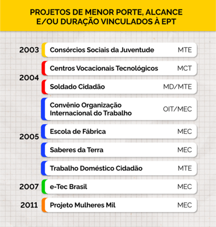

Políticas contemporâneas de EPT (2000-2016)
As políticas atuais de EPT podem ser analisadas em comparação com as anteriores. De fato, as antinomias e as contradições sinalizadas nos capítulos anteriores se materializam nestas políticas, sendo possível seguir o “fio da meada” conceitual. As três questões centrais – objetivos da Educação Profissional, currículos/metodologias e financiamento (tensão público x privado) – sempre estão presentes, adquirindo formas diferentes a partir das correlações de força no campo.
No final dos anos 1990 e início dos anos 2000, a concepção da EPT instrumental para atender o mercado de trabalho e para “compensar” a falta de emprego decorrente da crise econômica era hegemônica, e a separação entre Educação Básica e Profissional e a expansão da EPT via setor privado eram explícitas. Assim são explicadas a:
- Separação de tarefas entre Ministério da Educação (cursos técnicos de nível médio e superior) e Ministério do Trabalho (cursos de curta duração, sem vinculação com a escolaridade);
- Criação do Programa de Expansão da Educação Profissional (Proep/MEC), focado na criação de unidades escolares geridas por organizações sociais – privadas – financiadas com recursos públicos e na proibição da expansão das redes federal e estadual públicas;
- Criação do Plano Nacional de Qualificação Do Trabalhador (Planfor), focado na oferta de cursos de qualificação de curta duração com recursos públicos (Fundo de Amparo ao Trabalhador - FAT) executados por entidades privadas, com destaque para o SENAI e SENAC.
Já a partir de 2003, a concepção de EPT assumida pelo Governo Federal e por diversos estados foi a de uma perspectiva emancipatória vinculada ao desenvolvimento nacional, com formação integral (social e profissional, propedêutica e técnica); com ênfase na forma de articulação integrada ao Ensino Médio e no financiamento das redes públicas. O que explica:
- A revogação das normativas que impediam a expansão da rede federal e dificultavam a forma de articulação integrada;
- O Programa de Expansão da Rede Federal, interiorizando a oferta federal por meio da criação dos Institutos Federais de Educação, Ciência e Tecnologia (IFs);
- O Programa Brasil Profissionalizado, de fomento às redes públicas estaduais, com ênfase na oferta de cursos técnicos integrados ao nível médio;
- A extinção do Planfor, substituído pelo Programa Nacional de Qualificação (PNQ), em 2003, com concepção direcionada para a formação social e profissional de grupos de trabalhadores mais vulneráveis, com maior carga horária e menor volume de recursos;
- A criação de normativas regulatórias que fortaleceram a institucionalidade da EPT, como a modificação do artigo 39 da LDBEN, específico sobre a Educação Profissional, alterado pela Lei nº 11.741/2008, o Catálogo Nacional de Cursos Técnicos (CNCT, 1ª versão em 2008) e seu correlato para cursos superiores de Tecnologia (CNCST, 1ª versão em 2006);
- A criação do Programa Nacional de Integração da Educação Profissional com a Educação Básica na Modalidade de Educação de Jovens e Adultos (PROEJA);
- A representação de trabalhadores nos Conselhos Nacionais e Estaduais dos Serviços de Aprendizagem (2007) e os “Acordos de Gratuidade” (2008) – ampliação gradativa da oferta de cursos gratuitos por estas entidades –, com o debate sobre o alinhamento da oferta de cursos aos projetos de desenvolvimento nacional.
Deve ser ressaltado que o esforço quanto à institucionalização da política pública de Educação Profissional, no sentido de torná-la de Estado, supera um passado recorrente de ações circunscritas ao tempo de governo. Em aliança com os países africanos e europeus progressistas, o Brasil e os países do Mercosul, na 93ª Conferência Geral da Organização Internacional do Trabalho (“Uma globalização Justa, criando oportunidade para todos”), mantiveram a qualificação profissional como direito a ser negociado de forma tripartite na Recomendação 195 – “Sobre o desenvolvimento dos Recursos Humanos: Educação, Formação e Aprendizagem Permanente”.
No Brasil, além das normativas citadas, a criação dos Institutos Federais de Educação, Ciência e Tecnologia (IFs) vinculados ao desenvolvimento inclusivo territorial, substituindo os antigos CEFETS e Escolas Técnicas e Agrotécnicas, e a emergência das redes públicas estaduais, sobretudo no Nordeste, possibilitou a criação de centenas de unidades pelo Brasil afora. Logo, as redes públicas em seu conjunto tornaram-se não só as maiores ofertantes de cursos técnicos de nível médio do país, com foco na forma de articulação integrada ao Ensino Médio e à EJA, mas as mais capilares também. Discutiremos esses resultados a partir da apresentação e discussão de dados, ainda neste tópico.
.jpg)
Título: Ampliação do acesso à EPT
Fonte: Schüler (2023b).
Essas iniciativas aumentaram o capital do polo não hegemônico, com alguns agentes passando de coadjuvantes e figurantes a protagonistas, em particular no espaço público. A EPT passou a ser vista como uma política estratégica, permanente, essencial para o desenvolvimento do país. Esse processo significou uma diferença fundamental em relação aos programas e planos anteriores e posteriores, entretanto a crise política, a necessidade de manter a governabilidade e a capacidade do polo hegemônico de se adaptar, utilizando o capital pré-existente, levou a recuos e a “soluções de compromisso”. Esses se expressam em programas que, se de início pareciam atender aos interesses dos dois polos, desenvolveram-se para atender quase exclusivamente ao polo hegemônico, como demonstram o ProJovem e o PRONATEC.
O Programa Nacional de Inclusão de Jovens (ProJovem), de 2005, foi concebido como programa especial de oferta de Educação Profissional integrada à EJA para um público específico: jovens que, nas estatísticas, pertenciam ao segmento que não trabalhava, não estudava e não tinha concluído o Ensino Fundamental. O currículo inovador, o material didático de excelente qualidade, as estratégias metodológicas ousadas de permanência e a intersetorialidade entre trabalho, educação e assistência social não resistiram à lógica da execução em larga escala realizada por estados e municípios, com muitos deles terceirizando esse processo para as entidades privadas. Com uma multiplicidade de entidades executoras, sem vinculação obrigatória com as secretarias de educação, o Projovem passou a competir com a oferta permanente de EJA. Em 2008, houve uma atualização, segmentando mais os públicos, mas a ação perdeu prioridade e foi incorporada, em escala bem menor, pelo Ministério da Educação.
O Programa Nacional de Acesso ao Ensino Técnico e ao Emprego (PRONATEC) significou uma concessão bem maior. Já na sua primeira versão, em 2009, abriu espaço para que um eterno protagonista do campo se recuperasse, na medida em que permitiu aos Serviços Nacionais de Aprendizagem retomarem o acesso ao financiamento público em larga escala.
O PRONATEC visava integrar ações de diversos ministérios e alinhar provedores de cursos técnicos às políticas de desenvolvimento inclusivo. Em sua fase inicial (2009), promoveu um inédito alinhamento entre as demandas das secretarias de Educação, Ciência e Tecnologia e a oferta de cursos por instituições federais, estaduais e os Serviços Nacionais de Aprendizagem. A versão subsequente, já em 2011, ampliou as concessões incluindo municípios e redes privadas, sendo que o foco se deslocou da oferta de cursos técnicos de nível médio para os de qualificação de curta duração.
Os impactos se fizeram sentir naquelas instituições de EPT e nos estados que consideraram o PRONATEC a sua principal ação e não como complementar a uma estratégia mais ampla. Nestes casos, as redes se fragilizaram e perderam autonomia e capital no campo, o que, na prática, gerou a diminuição de recursos destinados à expansão e à consolidação das redes públicas. A falta de estudos sobre demanda de diferentes metodologias, a ausência de um sistema de avaliação da qualidade dos cursos ofertados, as assimetrias da capacidade de execução das instituições ofertantes e a não atenção às variações regionais levaram a não se alcançar os objetivos originais do programa, que não foi extinto formalmente, mas teve seus recursos diminuídos nos anos subsequentes, sendo utilizados saldos remanescentes de repasses anteriores.
As tensões entre os diferentes interesses e concepções se fizeram presentes em outros terrenos, como o da certificação profissional. A certificação de saberes adquiridos na vida e no trabalho começou a ser discutida no final dos anos 1990, a partir de uma perspectiva excludente, sendo a discussão retomada por iniciativa do Ministério do Trabalho em 2003, estendendo-se até 2007. Apesar de intensos debates, a proposta do Sistema Nacional de Certificação Profissional que articulava o reconhecimento gratuito, de caráter inclusivo e articulado com o Sistema de Educação para a elevação de escolaridade e com o Sistema Público de Emprego, Trabalho e Renda para reinserção laboral não se efetivou. Somente em 2009, foi criada a rede Certifica, restrita aos IFs e posteriormente atualizada em 2014, com a participação dos Serviços Nacionais de Aprendizagem, que já atuavam neste terreno a partir das experiências anglo-saxônicas de caráter excludente.
Outra sinalização da força do polo hegemônico e da capacidade do polo não hegemônico de se contrapor foi a elaboração das Diretrizes Nacionais do Ensino Médio (Resolução CNE/CEB 02/2012), que tratou da especificidade do Ensino Médio integrado, e das Diretrizes Nacionais da Educação Profissional (Resolução CNE/CEB 06/2012), no âmbito do Conselho Nacional de Educação (CNE). Em particular na segunda resolução citada, podem ser observadas “soluções de compromisso”, ou seja, a presença de interesses dos dois polos.

Título: Projetos de menor porte, alcance e/ou duração vinculados à EPT
Fonte: Prosa (2025f).
É importante ressaltar que essas disputas não eram (e não são) exclusivas do campo qualificação. Elas refletem a luta geral que ocorria na sociedade, com concessões e avanços do polo hegemônico em todos os espaços sociais. No que diz respeito à EPT, embora o resultado tenha sido um realinhamento e um fortalecimento do polo hegemônico, as ações anteriores colocaram em cena as redes públicas e, com elas, milhares de docentes e centenas de milhares de estudantes, cujas práticas demonstraram a possibilidade de uma EPT emancipatória nos cantos mais recônditos locais do país. Tais práticas, analisadas em pesquisas científicas rigorosas, constituíram um volume considerável de capital. Não seria possível, a partir daí, ignorar a existência desses espaços públicos e de seus intelectuais orgânicos que questionaram (e questionam) o pensamento hegemônico sobre a EPT, não apenas no plano teórico, mas com evidências empíricas robustas.